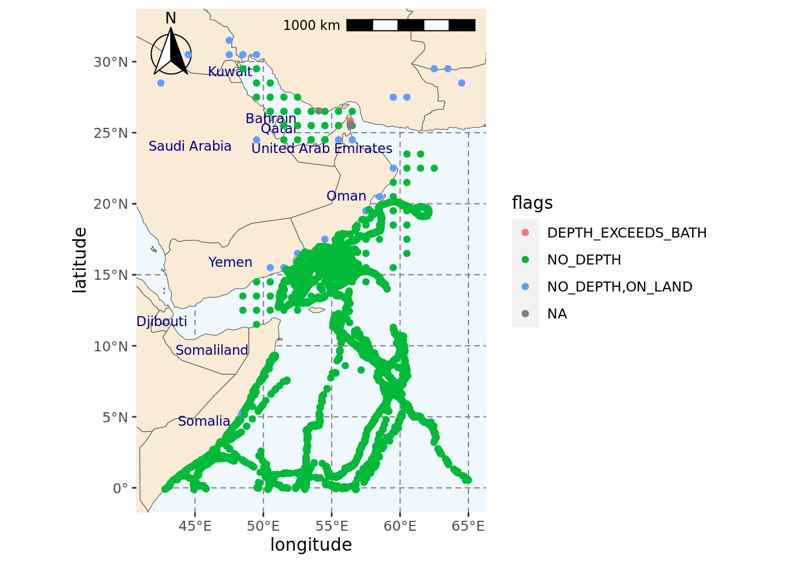

#Dealing with spatial data
library(sf)
#Getting base maps
library(rnaturalearth)
#Access to OBIS
library(robis)
#Data manipulation and visualisation
library(tidyverse)
library(janitor)Obtaining presence data for loggerhead turtles from OBIS
In this section, we will explore Loggerhead sea turtle (Caretta caretta) data from 2000 until present from the Ocean Biodiversity Information System (OBIS). We will use the robis package to search the OBIS library and download relevant data. We will then check for quality control flags and remove problematic observations from the data (i.e., sea turtle observations on land).
Load libraries
Load the region data
We defined our region and bounding box in the Region page.
Load the bounding box.
#Loading bounding box for the area of interest
fil <- here::here("data", "region", "BoundingBox.shp")
extent_polygon <- read_sf(fil)
#Extract polygon geometry
pol_geometry <- st_as_text(extent_polygon$geometry)Get Observations
We will use the robis package to find observations of Loggerhead sea turtles (C. caretta) published in OBIS.
#Search OBIS for loggerhead observations from 2000
caretta_obs <- occurrence("Caretta caretta",
startdate = as.Date("2000-01-01"),
#Apply spatial constraint
geometry = pol_geometry,
#Include absence records if available
absence = "include")
Retrieved 5000 records of approximately 5269 (94%)
Retrieved 5269 records of
approximately 5269 (100%)#Check structure of results
glimpse(caretta_obs)Rows: 5,269
Columns: 103
$ associatedReferences <chr> "[{\"crossref\":{\"citeinfo\":{\"origin\…
$ basisOfRecord <chr> "MachineObservation", "MachineObservatio…
$ bibliographicCitation <chr> "[{\"crossref\":{\"citeinfo\":{\"origin\…
$ catalogNumber <chr> "1014_8853", "1014_9766", "1014_8861", "…
$ collectionCode <chr> "1014", "1014", "1014", "1014", "1014", …
$ coordinatePrecision <chr> "9.99999999999999955e-07", "9.9999999999…
$ coordinateUncertaintyInMeters <chr> "0.11", "0.11", "0.11", "0.11", "0.11", …
$ datasetID <chr> "1014", "1014", "1014", "1014", "1014", …
$ datasetName <chr> "IFREMER/Kélonia satellite tracked late …
$ dateIdentified <chr> "2012-03-30T08:55:10", "2011-04-12T19:12…
$ decimalLatitude <dbl> 9.14804, 6.40193, 9.21307, 15.39172, 15.…
$ decimalLongitude <dbl> 50.69448, 59.87883, 50.82211, 55.71303, …
$ eventDate <chr> "2012-03-30T08:55:10", "2011-04-12T19:12…
$ eventTime <chr> "05:55:10Z", "15:12:41Z", "23:43:31Z", "…
$ family <chr> "Cheloniidae", "Cheloniidae", "Cheloniid…
$ footprintWKT <chr> "POINT(50.69448 9.14804)", "POINT(59.878…
$ genus <chr> "Caretta", "Caretta", "Caretta", "Carett…
$ geodeticDatum <chr> "EPSG:4326 WGS84", "EPSG:4326 WGS84", "E…
$ georeferencedDate <chr> "2012-03-30T08:55:10", "2011-04-12T19:12…
$ identificationRemarks <chr> "Identification Type:Telemetry", "Identi…
$ individualCount <chr> "1", "1", "1", "1", "1", "1", "1", "1", …
$ institutionCode <chr> "IFREMER and Kélonia", "IFREMER and Kélo…
$ kingdom <chr> "Animalia", "Animalia", "Animalia", "Ani…
$ license <chr> "http://creativecommons.org/licenses/by-…
$ lifeStage <chr> "Juvenile", "Juvenile", "Juvenile", "Juv…
$ modified <chr> "2013-10-25 13:35:20", "2013-10-25 13:35…
$ nomenclaturalCode <chr> "WoRMS LSID", "WoRMS LSID", "WoRMS LSID"…
$ occurrenceID <chr> "1014_8853", "1014_9766", "1014_8861", "…
$ occurrenceRemarks <chr> "Telemetry", "Telemetry", "Telemetry", "…
$ occurrenceStatus <chr> "present", "present", "present", "presen…
$ order <chr> "Testudines", "Testudines", "Testudines"…
$ organismID <chr> "57684", "66818", "57684", "66839", "668…
$ organismRemarks <chr> "Tagged animal. organismID may refer to …
$ ownerInstitutionCode <chr> "IFREMER and Kélonia", "IFREMER and Kélo…
$ phylum <chr> "Chordata", "Chordata", "Chordata", "Cho…
$ recordNumber <chr> "1014_8853", "1014_9766", "1014_8861", "…
$ scientificName <chr> "Caretta caretta", "Caretta caretta", "C…
$ scientificNameAuthorship <chr> "(Linnaeus, 1758)", "(Linnaeus, 1758)", …
$ scientificNameID <chr> "urn:lsid:marinespecies.org:taxname:1372…
$ specificEpithet <chr> "caretta", "caretta", "caretta", "carett…
$ taxonRank <chr> "Species", "Species", "Species", "Specie…
$ taxonRemarks <chr> "Taxon recorded as \"Caretta caretta\" b…
$ taxonomicStatus <chr> "valid", "valid", "valid", "valid", "val…
$ type <chr> "Event", "Event", "Event", "Event", "Eve…
$ verbatimEventDate <chr> "2012-03-30 08:55:10", "2011-04-12 19:12…
$ vernacularName <chr> "Loggerhead Sea Turtle", "Loggerhead Sea…
$ waterBody <chr> "Reunion Island,Oman,South-Africa", "Reu…
$ id <chr> "000341f8-f206-4120-bc73-432a0c729d7a", …
$ dataset_id <chr> "7687b242-05b7-48d7-a316-ba6dc34e72b5", …
$ node_id <chr> "573654c1-4ce7-4ea2-b2f1-e4d42f8f9c31", …
$ date_start <dbl> 1.333066e+12, 1.302566e+12, 1.333152e+12…
$ date_mid <dbl> 1.333066e+12, 1.302566e+12, 1.333152e+12…
$ date_end <dbl> 1.333066e+12, 1.302566e+12, 1.333152e+12…
$ date_year <int> 2012, 2011, 2012, 2011, 2011, 2011, 2011…
$ dropped <lgl> FALSE, FALSE, FALSE, FALSE, FALSE, FALSE…
$ absence <lgl> FALSE, FALSE, FALSE, FALSE, FALSE, FALSE…
$ marine <lgl> TRUE, TRUE, TRUE, TRUE, TRUE, TRUE, TRUE…
$ subphylum <chr> "Vertebrata", "Vertebrata", "Vertebrata"…
$ infraphylum <chr> "Gnathostomata", "Gnathostomata", "Gnath…
$ megaclass <chr> "Tetrapoda", "Tetrapoda", "Tetrapoda", "…
$ superclass <chr> "Reptilia", "Reptilia", "Reptilia", "Rep…
$ suborder <chr> "Cryptodira", "Cryptodira", "Cryptodira"…
$ superfamily <chr> "Chelonioidea", "Chelonioidea", "Cheloni…
$ species <chr> "Caretta caretta", "Caretta caretta", "C…
$ kingdomid <int> 2, 2, 2, 2, 2, 2, 2, 2, 2, 2, 2, 2, 2, 2…
$ phylumid <int> 1821, 1821, 1821, 1821, 1821, 1821, 1821…
$ subphylumid <int> 146419, 146419, 146419, 146419, 146419, …
$ infraphylumid <int> 1828, 1828, 1828, 1828, 1828, 1828, 1828…
$ megaclassid <int> 1831, 1831, 1831, 1831, 1831, 1831, 1831…
$ superclassid <int> 1838, 1838, 1838, 1838, 1838, 1838, 1838…
$ orderid <int> 2689, 2689, 2689, 2689, 2689, 2689, 2689…
$ suborderid <int> 148741, 148741, 148741, 148741, 148741, …
$ superfamilyid <int> 987094, 987094, 987094, 987094, 987094, …
$ familyid <int> 136999, 136999, 136999, 136999, 136999, …
$ genusid <int> 137066, 137066, 137066, 137066, 137066, …
$ speciesid <int> 137205, 137205, 137205, 137205, 137205, …
$ aphiaID <int> 137205, 137205, 137205, 137205, 137205, …
$ originalScientificName <chr> "Caretta caretta", "Caretta caretta", "C…
$ category <chr> "VU", "VU", "VU", "VU", "VU", "VU", "VU"…
$ flags <chr> "NO_DEPTH", "NO_DEPTH", "NO_DEPTH", "NO_…
$ bathymetry <int> 35, 3051, 136, 2784, 2453, 2736, 2880, 2…
$ shoredistance <int> 4680, 899682, 12208, 193567, 143853, 100…
$ sst <dbl> 26.21, 28.67, 26.21, 27.00, 26.92, 26.92…
$ sss <dbl> 35.63, 35.74, 35.65, 36.09, 36.09, 36.10…
$ dynamicProperties <chr> NA, NA, NA, NA, NA, NA, NA, NA, NA, NA, …
$ sex <chr> NA, NA, NA, NA, NA, NA, NA, NA, NA, NA, …
$ continent <chr> NA, NA, NA, NA, NA, NA, NA, NA, NA, NA, …
$ country <chr> NA, NA, NA, NA, NA, NA, NA, NA, NA, NA, …
$ day <chr> NA, NA, NA, NA, NA, NA, NA, NA, NA, NA, …
$ georeferenceRemarks <chr> NA, NA, NA, NA, NA, NA, NA, NA, NA, NA, …
$ locality <chr> NA, NA, NA, NA, NA, NA, NA, NA, NA, NA, …
$ maximumDepthInMeters <dbl> NA, NA, NA, NA, NA, NA, NA, NA, NA, NA, …
$ maximumElevationInMeters <chr> NA, NA, NA, NA, NA, NA, NA, NA, NA, NA, …
$ minimumDepthInMeters <int> NA, NA, NA, NA, NA, NA, NA, NA, NA, NA, …
$ minimumElevationInMeters <chr> NA, NA, NA, NA, NA, NA, NA, NA, NA, NA, …
$ month <chr> NA, NA, NA, NA, NA, NA, NA, NA, NA, NA, …
$ recordedBy <chr> NA, NA, NA, NA, NA, NA, NA, NA, NA, NA, …
$ references <chr> NA, NA, NA, NA, NA, NA, NA, NA, NA, NA, …
$ samplingProtocol <chr> NA, NA, NA, NA, NA, NA, NA, NA, NA, NA, …
$ year <chr> NA, NA, NA, NA, NA, NA, NA, NA, NA, NA, …
$ depth <dbl> NA, NA, NA, NA, NA, NA, NA, NA, NA, NA, …
$ superdomain <chr> NA, NA, NA, NA, NA, NA, NA, NA, NA, NA, …
$ superdomainid <int> NA, NA, NA, NA, NA, NA, NA, NA, NA, NA, …Explore OBIS results
Our search produced 5269 results for the area of our interest. However, before we continue to use this data as input for our species distribution models, we must clean it first to ensure we have a good quality dataset.
In this section, we will explore the results of our OBIS search so we can design a data cleaning workflow. We will check the content of some of the columns in our data frame.
You may want to refer to the OBIS manual and the OBIS webpage about Data Access.
#Checking values in basis of record column
caretta_obs %>%
distinct(basisOfRecord)# A tibble: 2 × 1
basisOfRecord
<chr>
1 MachineObservation
2 Occurrence In this context, MachineObservation refers to records obtained with satellite tags. While Occurrence refers to records obtained by human observers on the field. These two datasets cannot be treated in the same way as MachineObservation records are not independent as they record the movements of a single individual.
We can also check whether or not absence data is available for the loggerhead se a turtles in our area of interest.
caretta_obs %>%
distinct(absence)# A tibble: 1 × 1
absence
<lgl>
1 FALSE We only have presence data available, which is an important factor to consider when designing our species distribution model workflow.
We can also check the coordinateUncertaintyInMeters, which gives us an indication of the error associated with a particular record. If we look at the names of the columns printed at the beginning of the script, you may notice that this column has been read as characters. We will change it to numbers before looking at the values in the column.
#Changing column from characters to numeric
caretta_obs <- caretta_obs %>%
mutate(coordinateUncertaintyInMeters = as.numeric(coordinateUncertaintyInMeters))
#Checking uncertainty values for coordinates
caretta_obs %>%
distinct(coordinateUncertaintyInMeters)# A tibble: 3 × 1
coordinateUncertaintyInMeters
<dbl>
1 0.11
2 111319.
3 NA It is worth noting that not all providers share a measurement of uncertainty, but we can use this whenever is available to apply some sort of quality control to our data.
Here, we see that some observations have uncertainty of centimeters (0.11 m), but there are other observations with uncertainty over 100 km. For this example, we will remove these observations with large uncertainties.
Quality control flags
OBIS provides some quality control (QC) flags for each record that may help us identify observations of lower quality. For an explanation of OBIS flags, check this repository.
First, we will check the quality flags included in our results.
caretta_obs %>%
distinct(flags)# A tibble: 4 × 1
flags
<chr>
1 NO_DEPTH
2 NO_DEPTH,ON_LAND
3 DEPTH_EXCEEDS_BATH
4 <NA> We will now plot our dataset on a map and use the information in the flags column to color code the observations. This can help us decide whether we should include or exclude them from further analyses.
First we will load the region map that was saved in the Region page
fil <- here::here("data", "region", "region_map_label.rda")
load(fil)region_map_label +
geom_point(data = caretta_obs,
#Using coordinates to plot and color based on value in flags column
aes(decimalLongitude, decimalLatitude, color = flags))Scale on map varies by more than 10%, scale bar may be inaccurateWarning: Removed 231 rows containing missing values (`geom_text()`).
From the plot above, we should consider removing at least some of the observations classified as NO_DEPTH,ON_LAND. This is because loggerhead sea turtles are not present inland. Instead, they are found in temperate and subtropical ocean waters and in sandy beaches.
Some of these observations appear to be quite close to the shore, so they may have occurred in a sandy beach. We can check the proximity of the observation to the shore using the shoredistance column, which provides the distance to shore in meters.
caretta_obs %>%
filter(flags == "NO_DEPTH,ON_LAND") %>%
select(shoredistance) %>%
arrange(desc(shoredistance))# A tibble: 25 × 1
shoredistance
<int>
1 -231
2 -394
3 -971
4 -1403
5 -3895
6 -5896
7 -8319
8 -8562
9 -17661
10 -19763
# ℹ 15 more rowsThe inland observations are at least 231 meters away from the coast and up to 515 kilometers. For simplicity, we will remove all points flagged as NO_DEPTH,ON_LAND, but it is recommended that locations are looked more in depth and determine how likely it was that an individual was present at that location.
We can also check if any other observations have been reported in land. We will filter out the NO_DEPTH,ON_LAND flags and check for any negative values in the shoredistance column.
caretta_obs %>%
filter(flags != "NO_DEPTH,ON_LAND" & shoredistance < 0)# A tibble: 0 × 103
# ℹ 103 variables: associatedReferences <chr>, basisOfRecord <chr>,
# bibliographicCitation <chr>, catalogNumber <chr>, collectionCode <chr>,
# coordinatePrecision <chr>, coordinateUncertaintyInMeters <dbl>,
# datasetID <chr>, datasetName <chr>, dateIdentified <chr>,
# decimalLatitude <dbl>, decimalLongitude <dbl>, eventDate <chr>,
# eventTime <chr>, family <chr>, footprintWKT <chr>, genus <chr>,
# geodeticDatum <chr>, georeferencedDate <chr>, …No observations were returned, which is good news.
Another feature worth pointing out in our data is that some of the observations appear to be gridded as they are evenly spaced. This is confirmed by the occurrenceRemarks column, which states that some observations are: Telemetry locations aggregated per species per 1-degree cell. This is not ideal and you may need to consider if the inclusion of these data points are suitable for your project. In this example, we will remove them from our analysis.
Problematic observations
In this step, we will remove observations with coordinate uncertainty over 100 km, any observations with the NO_DEPTH,ON_LAND flag, and any records that have been aggregated to a 1-degree cell.
caretta_obs <- caretta_obs %>%
#Removing on land observations
filter(flags != "NO_DEPTH,ON_LAND" | is.na(flags)) %>%
#Removing observations with uncertainty over 100 km
filter(coordinateUncertaintyInMeters <= 100000 | is.na(coordinateUncertaintyInMeters)) %>%
#Removing records aggregated to 1 degree
filter(!str_detect(occurrenceRemarks, "degree"))Saving clean data
Now that we have removed the problematic observations, we can save the new dataset into our local machine. We will save this under the data folder.
fil <- here::here("data", "raw-bio", "loggerhead-robis.csv")
write_csv(caretta_obs, fil)